范畴论中，一切似乎都彼此关联，也都能从多个角度观察。以积的泛构造为例：现在了解了更多函子与自然变换，能否简化甚至推广它？来试试。

积的构造从选择两个对象 a、b 开始。但“选择对象”是什么意思？能否以更范畴化的方式重述？两个对象形成一种非常简单的模式。可以把模式抽象成一个非常简单但确实是范畴的范畴，称为 2。它只有对象 1、2，除必需的两个恒等态射外没有别的态射。现在，在 C 中选择两个对象可改述为定义从 2 到 C 的函子 D。函子映射对象，所以它的像就是两个对象（也可能折叠成一个，这也没问题）；它还映射态射，这里只把恒等态射映射成恒等态射。
这种方式的妙处，是它建立在范畴概念上，摆脱了“选择对象”这种来自祖先采集狩猎词汇的不精确说法。顺便说，它也很容易推广，因为完全可以用比 2 更复杂的范畴定义模式。
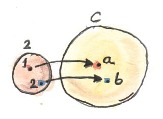
继续。积定义的下一步是选择候选对象 c。也可用来自单对象范畴的函子重述；若使用 Kan 延拓，这是正确做法。但我们还没准备好讨论 Kan 延拓，所以采用另一个技巧：从同一个范畴 2 到 C 的常函子 Δ。在 C 中选择 c 可以用 Δc 完成。记住，Δc 把所有对象映射到 c，所有态射映射到 idc。
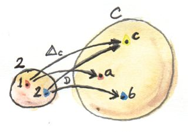
现在 Δc 与 D 都从 2 到 C，自然要问二者之间的自然变换。2 只有两个对象，所以自然变换有两个分量。对象 1 经 Δc 映射到 c，经 D 映射到 a；因此自然变换在 1 处的分量是从 c 到 a 的态射，称为 p。第二个分量同理，是从 c 到 b 的态射 q。这恰好就是原积定义中的两个投影。所以，无需再谈选择对象与投影，只需选择函子与自然变换。在这个简单例子中，自然性条件自动成立，因为 2 除恒等外没有态射。
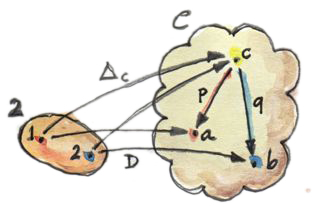
若把构造推广到含有非平凡态射的模式范畴，自然性会对 Δc 到 D 的变换施加条件。这样的变换称为锥（cone）：Δ 的像是锥或金字塔的顶点，自然变换各分量形成侧面，D 的像构成锥底。
一般构造锥时，从定义模式的小范畴 I 开始，它通常有限。选择从 I 到 C 的函子 D，并把它（或其像）称为图（diagram）。再选 C 中对象 c 作为锥顶，用它定义从 I 到 C 的常函子 Δc。从 Δc 到 D 的自然变换就是一个锥。若 I 有限，它只是一组把 c 连接到图——D 对 I 的像——的态射。
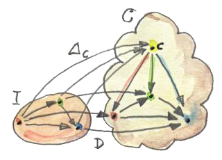
自然性要求图中所有三角形（锥壁）交换。取 I 中任意态射 f；D 把它映射到 C 中态射 D f，构成某个三角形的底边。常函子 Δc 把 f 映射为 c 上的恒等态射。Δ 把态射两端压成一个对象，于是自然性方块退化为交换三角形；三角形两臂就是自然变换的分量。
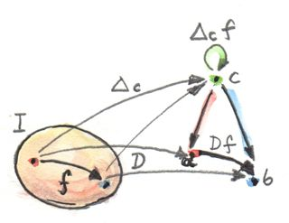
这只是一个锥。我们真正关心的是泛锥（universal cone），就像定义积时选择泛对象。
可以有多种处理方法。例如，基于给定函子 D 定义锥范畴（category of cones），其中对象是锥。并非 C 中每个对象 c 都能成为锥顶，因为 Δc 与 D 之间可能没有自然变换。
要成为范畴，还需定义锥之间的态射。它们由锥顶之间的态射完全决定，但不是任意态射都行。积构造中，候选对象（锥顶）之间的态射必须是投影的共同因子：
p' = p . m
q' = q . m
一般情况下，这转化为这样的条件：以因子态射为一边的三角形全部交换。
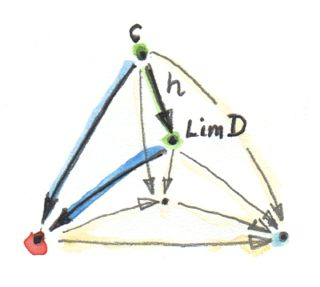
把这些因子态射作为锥范畴的态射。不难检查它们可复合，恒等态射也能因子分解，因此锥确实形成范畴。
现在可把泛锥定义为锥范畴的终对象。终对象定义说，从任何其他对象到它都有唯一态射。这里表示：从任意其他锥的锥顶到泛锥锥顶，都有唯一因子态射。这个泛锥称为图 D 的极限（limit），记作 lim D；常把锥顶简称为极限或极限对象。
直觉上，极限把整张图的性质凝聚在一个对象中。例如，两对象离散图的极限就是二者的积；积连同两个投影包含两个对象的信息，而泛性保证没有多余杂质。
作为自然同构的极限
这个极限定义仍有些不够令人满意。它能工作，但连接任意两个锥的三角形还带着交换条件。若能用某个自然性条件替代，会优雅得多。怎样做到？
现在面对的不再是一个锥，而是整个锥集合（实际是锥范畴）。若极限存在——必须强调，没有保证——其中一个锥是泛锥。对每个锥，都有唯一因子态射把其锥顶 c 映射到泛锥锥顶 lim D。（其实无需说“其他”锥，因为恒等态射把泛锥映射到自身并平凡地经自身分解。）重要之处是：给定任意锥，都有唯一的一支特殊态射。锥到特殊态射的映射是一一映射。
这支特殊态射属于 hom 集 C(c,lim D)。该 hom 集的其他成员没那么幸运，它们不会让两个锥的映射因子分解。我们想对每个 c，从集合 C(c,lim D) 中挑出一支满足特定交换条件的态射。这听起来像在定义自然变换，确实如此。
但这个变换连接哪两个函子？
第一个函子把 c 映射到集合 C(c,lim D)。它是从 C 到 Set 的函子，把对象映射到集合；实际上是逆变函子。定义它在态射上的作用。取 f:c′→c。函子把 c′ 映射为 C(c′,lim D)。提升 f 需要从 C(c,lim D) 到 C(c′,lim D) 的映射。任选成员 u:c→lim D，把 u 与 f 前复合，得到 u∘f:c′→lim D，即 C(c′,lim D) 的成员：
contramap :: (c' -> c) -> (c -> Lim D) -> (c' -> Lim D)
contramap f u = u . fc、c′ 顺序反转，正是逆变函子的特征。
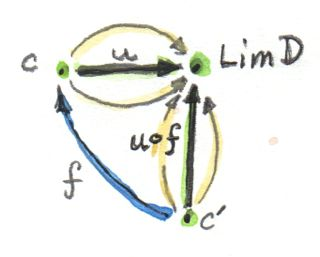
定义自然变换还需要另一个从 C 到 Set 的函子，这次考虑锥集合。锥就是自然变换，所以考察自然变换集合 Nat(Δc,D)。把 c 映射到该集合也是逆变函子。怎样证明？仍定义它在态射 f:c′→c 上的作用。提升 f 应给出：
怎样映射自然变换？自然变换是每个 I 中对象一支态射的分量选择。α∈Nat(Δc,D) 在 I 中对象 a 处的分量是 αa:Δca→Da，也就是 αa:c→Da。给定 f、α，需要构造 β∈Nat(Δc′,D)，其分量 βa:c′→Da。只需前复合：
不难证明这些分量组成自然变换。
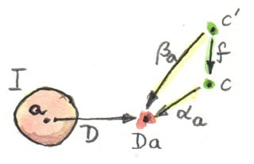
给定态射 f，我们逐分量构造了两个自然变换集合之间的映射，它定义函子 c↦Nat(Δc,D) 的 contramap。
至此得到两个从 C 到 Set 的逆变函子，没有作任何假设，它们总是存在。
顺便说，第一个函子在范畴论中很重要，讨论 Yoneda 引理时会再见。从任意范畴 C 到 Set 的逆变函子称为预层（presheaf）；这个特例称为可表预层（representable presheaf）。第二个函子也是预层。
有了两个函子，就能讨论自然变换。结论是：从 I 到 C 的函子 D 具有极限 lim D，当且仅当刚定义的两个函子之间存在自然同构：
提醒一下，自然同构是每个分量均为同构——可逆态射——的自然变换。
这里不展开证明。过程直接但繁琐。处理自然变换时，通常关注其分量，也就是态射。此处两个函子的目标都是 Set，所以自然同构的分量是函数。它们还是高阶函数，因为从 hom 集映射到自然变换集合。分析函数时观察它怎样作用于参数：这里参数是 C(c,lim D) 的成员——一支态射；结果是 Nat(Δc,D) 的成员——自然变换，也就是锥；这个自然变换又有自己的态射分量。所以一路到底都是态射，只要追踪清楚，就能证明结论。
最重要的结果是：这个同构的自然性条件，恰好就是锥映射的交换条件。
预告一下，集合 Nat(Δc,D) 可视为函子范畴中的 hom 集；所以这个自然同构连接两个 hom 集，指向更一般的关系——伴随（adjunction）。
极限示例
我们已经看到，范畴 2 生成的简单图，其极限就是范畴积。
还有更简单的极限：终对象。第一反应可能认为单元素范畴会产生终对象，事实更加极端：终对象是空范畴所生成图的极限。从空范畴出发的函子不选择任何对象，所以锥只剩锥顶；泛锥就是这样一个锥顶：任何其他锥顶到它都有唯一态射。这正是终对象定义。
下一个有趣极限称为等化子（equalizer）。它由含两个对象、二者间有两支平行态射（以及恒等态射）的范畴生成。这个范畴在 C 中选择出包含对象 a、b 与两支态射的图：
f :: a -> b
g :: a -> b在图上构造锥，需要添加锥顶 c 与两个投影：
p :: c -> a
q :: c -> b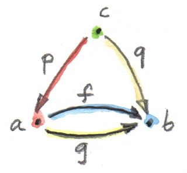
有两个必须交换的三角形：
q = f . p
q = g . p这说明 q 由任一方程唯一决定，可以从图中省略，只剩条件：
f . p = g . p若限定在 Set，函数 p 的像选择 a 的一个子集，函数 f、g 限制到这个子集后相等。
例如，让 a 是由坐标 x,y 参数化的二维平面，b 是实数轴，并取：
f (x, y) = 2 * y + x
g (x, y) = y - x二者的等化子是实数集合（锥顶 c）以及函数：
p t = (t, (-2) * t)p t 在二维平面中定义一条直线，沿线两函数相等。
当然，还有其他集合 c′ 与函数 p′ 也满足：
f . p' = g . p'但它们都唯一地经 p 因子分解。例如，可取单元素集合 () 为 c′，并定义：
p' () = (0, 0)这是好锥，因为 f (0,0)=g (0,0)；但不泛，因为存在唯一经 h 的因子分解：
p' = p . h其中：
h () = 0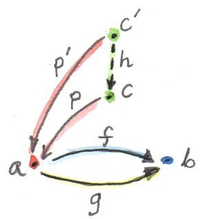
因此等化子可用于求解 f x = g x 形式的方程；但它更一般，因为定义使用对象与态射，而非代数。
另一种极限——拉回（pullback）——体现更一般的解方程思想。仍有两支要令其相等的态射，但定义域不同。起点是形状为 1→2←3 的三对象范畴。对应图含对象 a,b,c 与态射：
f :: a -> b
g :: c -> b这种图常称为余跨度（cospan）。
其上的锥包含锥顶 d 与三支态射：
p :: d -> a
q :: d -> c
r :: d -> b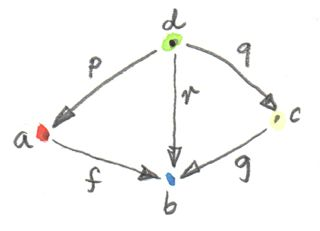
交换条件说明 r 完全由另两支态射决定，可从图中省略，只剩：
g . q = f . p这种形状的泛锥就是拉回。
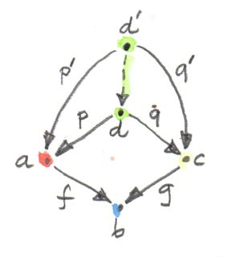
若限定在集合，d 可看作来自 a、c 的元素 pair 集合，且 f 作用于第一项等于 g 作用于第二项。更具体地，若 g 是常函数 g _ = 1.23（假设 b 是实数集合），就是求解：
f x = 1.23此时 c 的选择无关紧要（只要非空），可取单元素集合。若 a 是三维向量集合，f 是向量长度，则拉回是所有 pair (v,()) 的集合，其中 v 长度为 1.23，也就是方程 √(x²+y²+z²)=1.23 的解，而 () 是单元素集合的占位元素。
拉回在编程中还有更一般的应用。例如，把 C++ 类看成范畴，态射从子类指向超类。把继承视为传递关系：若 C 继承 B，B 继承 A，就说 C 继承 A（期待 A 指针处可传 C 指针）。还假设 C 继承自身，于是每个类都有恒等箭头。这样子类关系与子类型关系一致。C++ 支持多继承，可以构造菱形图：B、C 继承 A，D 再同时继承 B、C。通常 D 会得到两份 A，这很少符合需要；虚继承可让 D 只保留一份 A。
让 D 成为该图的拉回意味着：任何同时继承 B、C 的类 E 也是 D 的子类。这在采用名义子类型的 C++ 中无法直接表达（编译器不会推断此类关系，需要“鸭子类型”）。但可以跳出子类型关系，询问从 E 转换到 D 是否安全。若 D 只是 B、C 的最小组合，没有额外数据也不覆写方法，转换就是安全的。当然，若 B、C 的某些方法名冲突，则不存在拉回。
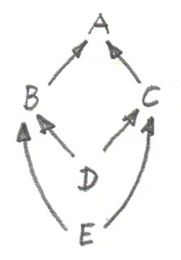
拉回还高级地用于类型推断。经常需要合一（unify）两个表达式的类型。例如编译器推断函数：
twice f x = f (f x)它给所有变量与子表达式分配初步类型：
f :: t0
x :: t1
f x :: t2
f (f x) :: t3由此得到：
twice :: t0 -> t1 -> t3函数应用规则还产生约束：
t0 = t1 -> t2 -- f 应用于 x
t0 = t2 -> t3 -- f 应用于 (f x)必须寻找一组类型或类型变量替换未知类型，使两个表达式得到相同类型。一种替换是：
t1 = t2 = t3 = Int
twice :: (Int -> Int) -> Int -> Int但显然不是最一般的。最一般替换通过拉回得到。细节超出本书范围，但结果应为：
twice :: (t -> t) -> t -> t其中 t 是自由类型变量。
余极限
和范畴论的所有构造一样，极限在对偶范畴中有镜像。反转锥的全部箭头得到余锥（cocone），其中的泛对象称为余极限（colimit）。反转也影响因子态射：它现在从泛余锥流向任意其他余锥。
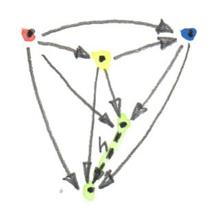
余极限的典型例子是余积，对应范畴 2 所生成的图；这正是定义积时使用的范畴。
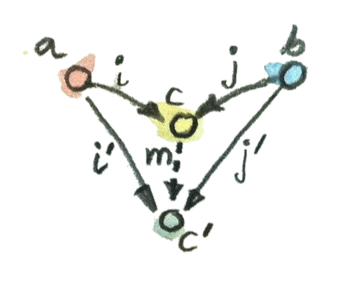
积与余积都以不同方式体现一对对象的本质。
正如终对象是极限，始对象是基于空范畴之图的余极限。
拉回的对偶称为推出（pushout），基于称为跨度（span）的图，由形状 1←2→3 的范畴生成。
连续性
此前说过，函子很接近范畴间连续映射：它从不切断既有连接（态射）。从 C 到 C′ 的连续函子（continuous functor） F 的实际定义，还要求函子保持极限。C 中每张图 D 都能通过复合函子映射成 C′ 中的图 F∘D。连续性条件说：若 D 有极限 lim D，则 F∘D 也有极限，而且等于 F(lim D)。
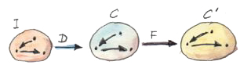
函子把态射映射到态射、复合映射到复合，所以锥的像总是锥；交换三角形仍映射成交换三角形。因子态射也一样，其像仍是因子态射。因此每个函子都几乎连续。可能失败的是唯一性：C′ 中的因子态射也许不唯一；C′ 中也可能出现 C 中没有的其他“更好锥”。
Hom 函子是连续函子的例子。回忆 hom 函子 C(a,b) 在第一个变量上逆变、第二个变量上协变，即函子：
固定第二个参数时，hom 集函子成为可表预层，把 C 中余极限映射成 Set 中极限；固定第一个参数时，则把极限映射成极限。
Haskell 中，hom 函子把任意两个类型映射到函数类型，也就是参数化函数类型。固定第二个参数为 String，得到逆变函子：
newtype ToString a = ToString (a -> String)
instance Contravariant ToString where
contramap f (ToString g) = ToString (g . f)连续性表示，当 ToString 应用于余极限，例如余积 Either b c 时，会产生极限；这里是两个函数类型的积：
ToString (Either b c) ~ (b -> String, c -> String)确实，任意从 Either b c 出发的函数，都实现为两个分支分别由一对函数处理的 case。
类似地，固定 hom 集的第一个参数，得到熟悉的 Reader 函子。其连续性表示，例如任何返回积的函数都等价于函数的积：
r -> (a, b) ~ (r -> a, r -> b)我知道你在想什么：无需范畴论也能看出这些。你说得对！但我仍惊叹于这些结果能从第一原理推出，无需诉诸比特与字节、处理器架构、编译器技术，甚至 lambda 演算。
若好奇“极限”和“连续性”的名称来源，它们推广了微积分中的同名概念。微积分以开邻域定义极限与连续；定义拓扑的开集形成一个范畴（偏序集）。
习题
- 怎样描述 C++ 类范畴中的推出？
点击展开参考答案
给定共同子类 A 以及继承箭头
A→B、A→C，推出是把 B、C 沿共同的 A 部分粘合得到的最小共同超类型 D。任何同时接收 B、C 且两条路径在 A 上一致的其他类型 E，都有唯一箭头D→E。名义类型系统通常不会自动构造或识别它；结构化类型、接口组合或显式适配器更接近该泛性质。 - 证明恒等函子 Id:C→C 的极限是始对象。
点击展开参考答案
Id 的图包含 C 的全部对象与态射。以对象
i为锥顶的锥，为每个对象a提供态射i→a，并对 C 中全部态射自然。若i是始对象，这些态射唯一，自然性自动成立。任意其他锥顶c到i有唯一锥态射，因为该锥在对象i处已有分量c→i，自然性迫使其他分量经它分解。因此该锥为终锥，锥顶是始对象。 - 给定集合的子集以包含关系构成范畴。两个集合的拉回、推出、始对象、终对象分别是什么？
点击展开参考答案
在这个偏序范畴中，拉回是最大下界，即交集；推出是最小上界，即并集。始对象是空集，终对象是给定全集本身。
- 猜猜余等化子（coequalizer）是什么。
点击展开参考答案
它是等化子的对偶。给定平行态射
f,g:a→b，余等化子是态射q:b→c，满足q∘f=q∘g，并且任何同样使二者相等的q′:b→c′都唯一经q因子分解。在 Set 中，它把f(x)与g(x)生成的等价关系取商。 - 证明在有终对象的范畴中，指向终对象的拉回就是积。
点击展开参考答案
给定对象 A、B，它们到终对象 1 各有唯一态射。其余跨度
A→1←B上，任何候选对象 X 的两条腿X→A、X→B自动满足到 1 的交换条件，因为X→1唯一。因此该图的拉回泛性质恰好是积：对任意一对投影都有唯一态射进入拉回。 - 类似地，证明从始对象出发的推出就是余积。
点击展开参考答案
给定始对象 0 到 A、B 的唯一态射，跨度
A←0→B上任意余锥的交换条件自动成立，因为从 0 出发的态射唯一。泛余锥要求从 A、B 的两支注入到任意其他注入对之间存在唯一因子态射，这正是余积的泛性质。